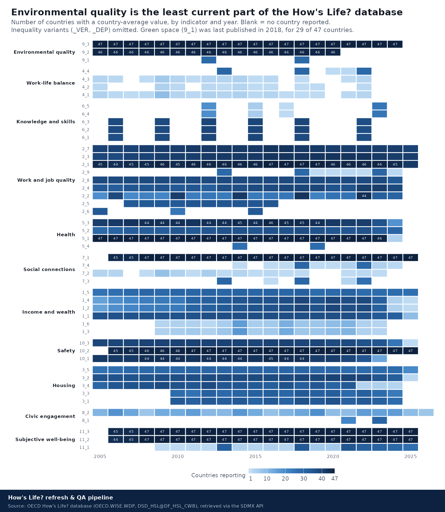
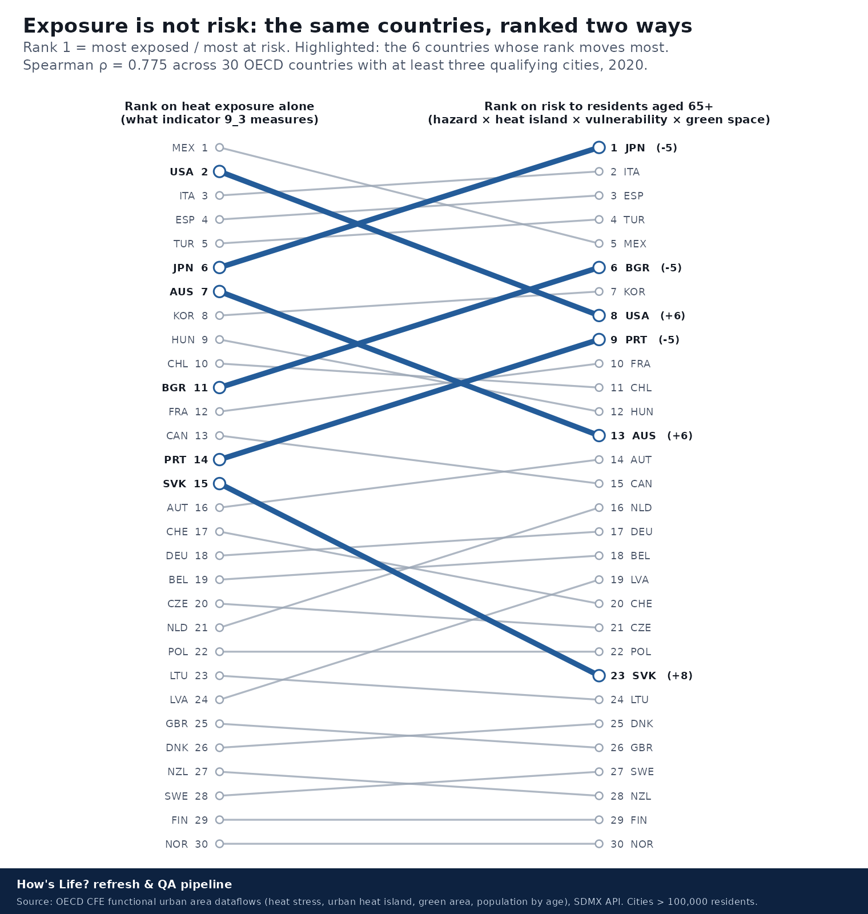
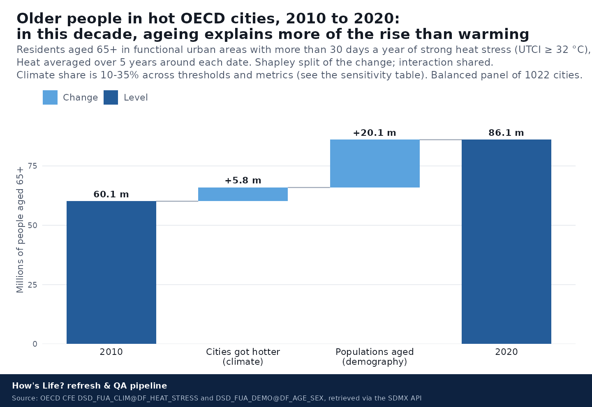

At a glanceEn bref
1. Keeping the database fresh — automatically1. Maintenir la base à jour — automatiquement
The How's Life? database is fully available over the OECD SDMX REST API. This pipeline treats the API as the source of record: it fetches every observation, records the URL, timestamp and SHA-256 of what it received, validates it against a rule set, and — when run again — reports what was added, revised, reflagged or withdrawn.La base How's Life? est entièrement accessible via l'API SDMX REST de l'OCDE. Ce pipeline traite l'API comme la source de référence : il extrait chaque observation, enregistre l'URL, l'horodatage et le SHA-256 de ce qu'il a reçu, le valide selon un jeu de règles et — relancé — signale ce qui a été ajouté, révisé, re-signalé ou retiré.

| rule | severity | n |
|---|---|---|
| definition_differs | info | 7,904 |
| series_break | info | 1,749 |
| provisional_or_estimated | info | 272 |
| Domain | Indicator | Countries | Latest year | Lag (years) |
|---|---|---|---|---|
| HSL_2 | 2_6 | 36 | 2,015 | 11 |
| HSL_2 | 2_5 | 35 | 2,016 | 10 |
| HSL_6 | 6_4_VER | 29 | 2,017 | 9 |
| HSL_6 | 6_5_VER | 29 | 2,017 | 9 |
| HSL_9 | 9_1 | 29 | 2,018 | 8 |
| HSL_5 | 5_4 | 29 | 2,019 | 7 |
| HSL_9 | 9_2 | 46 | 2,020 | 6 |
| HSL_4 | 4_2 | 15 | 2,022 | 4 |
| HSL_4 | 4_1 | 22 | 2,022 | 4 |
| HSL_4 | 4_3 | 24 | 2,022 | 4 |
The gaps file — 657 empty and 1,127 stale country × indicator cells — is the first draft of the data request the OECD sends to national statistical offices each year.Le fichier des lacunes — 657 cellules vides et 1,127 obsolètes — est le premier brouillon de la demande de données envoyée chaque année aux offices statistiques nationaux.
2. Exposure is not risk2. L'exposition n'est pas le risque
The environmental dimension of the framework has three indicators — green space, air pollution, extreme temperature — and all three measure what people are exposed to. None measures who is sensitive to it or what protects them. It is also the only dimension with no distributional data at all: no breakdown by sex, age or education, and no inequality variant.La dimension environnementale du cadre compte trois indicateurs — espaces verts, pollution de l'air, températures extrêmes — qui mesurent tous l'exposition. Aucun ne mesure qui y est sensible ni ce qui protège. C'est aussi la seule dimension sans aucune donnée de répartition.
The OECD already publishes the missing layers, at city level, in another directorate. This section joins them and assigns each to an IPCC risk component:L'OCDE publie déjà les couches manquantes, au niveau des villes, dans une autre direction. Cette section les assemble et attribue à chacune une composante du risque au sens du GIEC :
| ComponentComposante | LayerCouche | OECD dataflowFlux de données OCDE |
|---|---|---|
| HazardAléa | Days per year of strong heat stress (UTCI ≥ 32 °C), population-weightedJours par an de fort stress thermique (UTCI ≥ 32 °C), pondérés par la population | DSD_FUA_CLIM@DF_HEAT_STRESS |
| Hazard modifierModulateur de l'aléa | Summer night-time urban heat island (°C)Îlot de chaleur urbain, nuits d'été (°C) | DSD_FUA_ENV@DF_UHI |
| ExposureExposition | Resident population, total and by age bandPopulation résidente, totale et par tranche d'âge | DSD_FUA_DEMO@DF_AGE_SEX |
| Vulnerability (sensitivity)Vulnérabilité (sensibilité) | Share of residents aged 65+Part des résidents de 65 ans et plus | DSD_FUA_DEMO@DF_AGE_SEX |
| Adaptive capacityCapacité d'adaptation | Green area per person; cooling degree days (energy burden)Espaces verts par habitant ; degrés-jours de refroidissement | DSD_FUA_ENV@DF_GREEN_AREA, DSD_FUA_ENER@DF_CDD_HDD |

What the test says — honestlyCe que dit le test — honnêtement
The two rankings are correlated (ρ = 0.775) but far from identical: about 40% of the rank variance differs. The countries with the largest older populations at risk — Japan, Italy, Spain — are hot on any measure, so the share of at-risk people misplaced by exposure alone is small (3.1%). What moves is which hot countries matter: the United States and Mexico fall sharply once vulnerability and green space are counted; Japan rises to first.Les deux classements sont corrélés (ρ = 0.775) mais loin d'être identiques. Les pays aux plus grandes populations âgées à risque — Japon, Italie, Espagne — sont chauds quelle que soit la mesure ; la part des personnes à risque mal classées par l'exposition seule est donc faible (3.1 %). Ce qui bouge, c'est quels pays chauds comptent : les États-Unis et le Mexique reculent nettement ; le Japon passe premier.
| Country | Cities | Heat days | Urban 65+ in top-risk cities (%) | Urban 65+ at risk (thousands) | Rank: exposure | Rank: risk | Shift |
|---|---|---|---|---|---|---|---|
| SVK | 5.0 | 18.5 | 0.0 | 0.0 | 15.0 | 23.0 | -8.0 |
| USA | 202.0 | 95.0 | 11.1 | 4,268.1 | 2.0 | 8.0 | -6.0 |
| AUS | 16.0 | 46.2 | 0.0 | 0.0 | 7.0 | 13.0 | -6.0 |
| JPN | 60.0 | 56.7 | 85.3 | 22,497.8 | 6.0 | 1.0 | 5.0 |
| BGR | 7.0 | 38.8 | 28.6 | 221.2 | 11.0 | 6.0 | 5.0 |
| PRT | 5.0 | 20.7 | 6.1 | 69.5 | 14.0 | 9.0 | 5.0 |
| NLD | 26.0 | 12.6 | 0.0 | 0.0 | 21.0 | 16.0 | 5.0 |
| LVA | 3.0 | 8.0 | 0.0 | 0.0 | 24.0 | 19.0 | 5.0 |
| MEX | 91.0 | 118.3 | 41.8 | 2,601.2 | 1.0 | 5.0 | -4.0 |
| HUN | 10.0 | 39.8 | 0.0 | 0.0 | 9.0 | 12.0 | -3.0 |
| Step | Components | ρ vs final ranking | ρ vs previous step |
|---|---|---|---|
| hazard only | 1.000 | 0.940 | |
| + night heat island | 2.000 | 0.948 | 0.932 |
| + share aged 65+ | 3.000 | 0.920 | 0.896 |
| + green space | 4.000 | 0.983 | 0.937 |
| + cooling degree days | 5.000 | 1.000 | 0.983 |
| Weighting | ρ vs equal weights |
|---|---|
| equal | 1.000 |
| hazard_heavy | 0.924 |
| vulnerability_heavy | 0.957 |
| City | Country | Heat days | Night UHI (°C) | Green m²/person | % 65+ | 65+ (thousands) | Risk score |
|---|---|---|---|---|---|---|---|
| Córdoba | ESP | 121.0 | 4.8 | 89.0 | 19.3 | 87.0 | 81.9 |
| Osaka | JPN | 62.0 | 2.5 | 48.0 | 27.4 | 4,653.0 | 81.9 |
| Lecce | ITA | 82.0 | 2.1 | 54.0 | 23.9 | 64.0 | 81.7 |
| Foggia | ITA | 90.0 | 2.0 | 22.0 | 22.3 | 50.0 | 81.3 |
| Trapani | ITA | 43.0 | 2.7 | 48.0 | 23.2 | 27.0 | 80.7 |
| Tokyo | JPN | 61.0 | 2.4 | 38.0 | 24.4 | 8,975.0 | 80.6 |
| Valladolid | ESP | 72.0 | 3.4 | 71.0 | 22.5 | 99.0 | 80.5 |
| Salamanca | ESP | 66.0 | 4.3 | 68.0 | 23.1 | 49.0 | 80.5 |
| Kagoshima | JPN | 58.0 | 2.7 | 94.0 | 27.8 | 199.0 | 80.2 |
| Asti | ITA | 78.0 | 2.3 | 54.0 | 26.4 | 30.0 | 80.1 |
| Oita | JPN | 57.0 | 2.9 | 88.0 | 30.2 | 218.0 | 80.1 |
| Cajeme | MEX | 264.0 | 2.7 | 27.0 | 8.8 | 39.0 | 79.4 |
The country-level indicator, in the framework's own shapeL'indicateur pays, dans le format du cadre
The Well-being Data Monitor is a country-level tool, so the headline is a country number: the share of a country's urban residents aged 65+ living in cities in the global top quintile of risk. It is written in How's Life? column grammar with OBS_STATUS = E (estimated). This is evidence and a method, not a proposed official statistic; adopting any indicator goes through the Committee on Statistics and Statistical Policy and national statistical offices.Le Moniteur des données sur le bien-être est un outil au niveau des pays ; le chiffre principal est donc national : la part des citadins de 65 ans et plus vivant dans des villes du quintile supérieur de risque. Il est écrit dans la grammaire de How's Life? avec OBS_STATUS = E. C'est une preuve et une méthode, pas une statistique officielle proposée.
| Country | Cities | Heat days (pop-weighted) | Urban 65+ in top-risk cities (%) | Urban 65+ at risk (thousands) | Rank: exposure | Rank: risk | Shift |
|---|---|---|---|---|---|---|---|
| JPN | 60.0 | 56.7 | 85.3 | 22,497.8 | 6.0 | 1.0 | 5.0 |
| ITA | 65.0 | 61.9 | 72.1 | 5,466.0 | 3.0 | 2.0 | 1.0 |
| ESP | 47.0 | 60.3 | 61.5 | 4,038.7 | 4.0 | 3.0 | 1.0 |
| TUR | 26.0 | 60.2 | 48.8 | 1,490.7 | 5.0 | 4.0 | 1.0 |
| MEX | 91.0 | 118.3 | 41.8 | 2,601.2 | 1.0 | 5.0 | -4.0 |
| BGR | 7.0 | 38.8 | 28.6 | 221.2 | 11.0 | 6.0 | 5.0 |
| KOR | 21.0 | 40.7 | 12.9 | 813.5 | 8.0 | 7.0 | 1.0 |
| USA | 202.0 | 95.0 | 11.1 | 4,268.1 | 2.0 | 8.0 | -6.0 |
| PRT | 5.0 | 20.7 | 6.1 | 69.5 | 14.0 | 9.0 | 5.0 |
| FRA | 62.0 | 27.6 | 2.1 | 158.8 | 12.0 | 10.0 | 2.0 |
| CHL | 23.0 | 39.5 | 2.1 | 33.3 | 10.0 | 11.0 | -1.0 |
| HUN | 10.0 | 39.8 | 0.0 | 0.0 | 9.0 | 12.0 | -3.0 |
| AUS | 16.0 | 46.2 | 0.0 | 0.0 | 7.0 | 13.0 | -6.0 |
| AUT | 6.0 | 17.1 | 0.0 | 0.0 | 16.0 | 14.0 | 2.0 |
| CAN | 25.0 | 22.0 | 0.0 | 0.0 | 13.0 | 15.0 | -2.0 |
| NLD | 26.0 | 12.6 | 0.0 | 0.0 | 21.0 | 16.0 | 5.0 |
| DEU | 71.0 | 16.5 | 0.0 | 0.0 | 18.0 | 17.0 | 1.0 |
| BEL | 10.0 | 16.4 | 0.0 | 0.0 | 19.0 | 18.0 | 1.0 |
| LVA | 3.0 | 8.0 | 0.0 | 0.0 | 24.0 | 19.0 | 5.0 |
| CHE | 10.0 | 16.9 | 0.0 | 0.0 | 17.0 | 20.0 | -3.0 |
| CZE | 10.0 | 12.6 | 0.0 | 0.0 | 20.0 | 21.0 | -1.0 |
| POL | 36.0 | 10.7 | 0.0 | 0.0 | 22.0 | 22.0 | 0.0 |
| SVK | 5.0 | 18.5 | 0.0 | 0.0 | 15.0 | 23.0 | -8.0 |
| LTU | 5.0 | 9.2 | 0.0 | 0.0 | 23.0 | 24.0 | -1.0 |
| DNK | 4.0 | 3.5 | 0.0 | 0.0 | 26.0 | 25.0 | 1.0 |
| GBR | 78.0 | 3.6 | 0.0 | 0.0 | 25.0 | 26.0 | -1.0 |
| SWE | 9.0 | 1.5 | 0.0 | 0.0 | 28.0 | 27.0 | 1.0 |
| NZL | 6.0 | 2.4 | 0.0 | 0.0 | 27.0 | 28.0 | -1.0 |
| FIN | 6.0 | 0.8 | 0.0 | 0.0 | 29.0 | 29.0 | 0.0 |
| NOR | 4.0 | 0.3 | 0.0 | 0.0 | 30.0 | 30.0 | 0.0 |
Sample of the HSL-schema rowsExtrait des lignes au format HSL
| REF_AREA | MEASURE | UNIT_MEASURE | AGE | SEX | EDUCATION_LEV | DOMAIN | TIME_PERIOD | OBS_VALUE | OBS_STATUS |
|---|---|---|---|---|---|---|---|---|---|
| AUS | ENV_HEATEXP_URB | D_Y | _T | _T | _T | HSL_9 | 2,020.00 | 46.24 | E |
| AUT | ENV_HEATEXP_URB | D_Y | _T | _T | _T | HSL_9 | 2,020.00 | 17.10 | E |
| BEL | ENV_HEATEXP_URB | D_Y | _T | _T | _T | HSL_9 | 2,020.00 | 16.41 | E |
| BGR | ENV_HEATEXP_URB | D_Y | _T | _T | _T | HSL_9 | 2,020.00 | 38.76 | E |
| CAN | ENV_HEATEXP_URB | D_Y | _T | _T | _T | HSL_9 | 2,020.00 | 22.01 | E |
| CHE | ENV_HEATEXP_URB | D_Y | _T | _T | _T | HSL_9 | 2,020.00 | 16.87 | E |
| CHL | ENV_HEATEXP_URB | D_Y | _T | _T | _T | HSL_9 | 2,020.00 | 39.47 | E |
| CZE | ENV_HEATEXP_URB | D_Y | _T | _T | _T | HSL_9 | 2,020.00 | 12.63 | E |
| DEU | ENV_HEATEXP_URB | D_Y | _T | _T | _T | HSL_9 | 2,020.00 | 16.47 | E |
| DNK | ENV_HEATEXP_URB | D_Y | _T | _T | _T | HSL_9 | 2,020.00 | 3.49 | E |
| ESP | ENV_HEATEXP_URB | D_Y | _T | _T | _T | HSL_9 | 2,020.00 | 60.28 | E |
| FIN | ENV_HEATEXP_URB | D_Y | _T | _T | _T | HSL_9 | 2,020.00 | 0.82 | E |
3. Why it changed: climate or demography?3. Pourquoi cela a changé : climat ou démographie ?

| Term | Millions aged 65+ |
|---|---|
| 2010 (start) | 60.13 |
| Cities got hotter (Shapley) | 5.78 |
| Populations aged (Shapley) | 20.14 |
| Interaction (shared in Shapley terms) | 1.30 |
| 2020 (end) | 86.06 |
Does the split survive other choices? Challenged - and largely yesLe partage resiste-t-il a d'autres choix ? Mis a l'epreuve - et largement oui
A binary threshold only counts cities that cross it: a city already hot in 2010 that got hotter adds nothing to the climate term. And a single-year baseline is noisy - 2010 was a hot year. So the split was re-run across thresholds from 10 to 60 days, with single-year and five-year-mean heat, and on a continuous measure - person-days of heat for the 65+ - which does see intensification. Climate's share ranges from 10% to 35%; demography is the larger driver in every specification. Over the decade the urban population aged 65+ grew 29% while population-weighted heat-stress days grew 17%. This is a statement about 2010-2020, the decade the baby-boom cohort crossed 65; as ageing slows and warming accelerates, the balance should shift. Demography here also includes older people moving to hot places.Un seuil binaire ne compte que les villes qui le franchissent. Le partage a donc ete recalcule pour des seuils de 10 a 60 jours, avec une chaleur annuelle ou moyennee sur cinq ans, et sur une mesure continue (personnes-jours de chaleur des 65 ans et plus). La part du climat va de 10 % a 35 % ; la demographie domine dans toutes les specifications. Sur la decennie, la population urbaine de 65 ans et plus a cru de 29 % et les jours de stress thermique de 17 %.
| Metric | Heat basis | Start | End | Climate | Ageing | Climate share (%) |
|---|---|---|---|---|---|---|
| people 65+ in cities above 10 heat days | single year | 90.0 | 121.0 | 4.0 | 27.0 | 12.9 |
| people 65+ in cities above 20 heat days | single year | 68.2 | 96.8 | 6.0 | 22.6 | 21.1 |
| people 65+ in cities above 30 heat days | single year | 60.3 | 86.4 | 5.8 | 20.2 | 22.4 |
| people 65+ in cities above 45 heat days | single year | 51.8 | 73.4 | 4.0 | 17.5 | 18.7 |
| people 65+ in cities above 60 heat days | single year | 41.5 | 57.5 | 1.7 | 14.4 | 10.5 |
| person-days of heat stress, residents 65+ | single year | 5,587.3 | 7,866.6 | 299.0 | 1,980.3 | 13.1 |
| people 65+ in cities above 10 heat days | 5-year mean | 81.5 | 121.6 | 13.9 | 26.3 | 34.5 |
| people 65+ in cities above 20 heat days | 5-year mean | 66.0 | 100.3 | 12.0 | 22.3 | 34.9 |
| people 65+ in cities above 30 heat days | 5-year mean | 60.1 | 86.1 | 5.8 | 20.1 | 22.3 |
| people 65+ in cities above 45 heat days | 5-year mean | 48.2 | 69.6 | 5.0 | 16.4 | 23.2 |
| people 65+ in cities above 60 heat days | 5-year mean | 41.3 | 59.2 | 3.6 | 14.3 | 20.1 |
| person-days of heat stress, residents 65+ | 5-year mean | 5,234.5 | 7,912.8 | 748.3 | 1,930.0 | 27.9 |
4. Method, provenance and limits4. Méthode, provenance et limites
Where the heat numbers come fromD'où viennent les chiffres de chaleur
From the OECD's own metadata: the Universal Thermal Climate Index (air temperature, wind, radiation, humidity) from the Copernicus Climate Data Store thermal-comfort grids (Di Napoli et al., 10.24381/cds.553b7518) at 0.25°; days above each threshold counted per cell; population-weighted with the Global Human Settlement Layer (GHSL 2023, 10.2760/098587); aggregated to OECD/EU functional urban areas. The OECD's own caveat applies: reanalysis estimates may differ from in-situ subnational statistics.D'après les métadonnées de l'OCDE : indice UTCI issu des grilles de confort thermique du Copernicus Climate Data Store (Di Napoli et al.) à 0,25°, jours au-dessus de chaque seuil comptés par cellule, pondération par la population GHSL 2023, agrégation aux aires urbaines fonctionnelles OCDE/UE.
Consequence for interpretation. A city's published value is already a population-weighted average. Weighting across cities by the 65+ population therefore measures how many older people live in hot cities, not how much heat an older person personally experiences. At 0.25° a whole urban area can sit in one or two grid cells, so within-city heat islands are invisible in the hazard layer — which is exactly why the separate UHI layer matters, and why the age gap in exposure is near zero within countries.Conséquence pour l'interprétation. La valeur publiée d'une ville est déjà une moyenne pondérée par la population. Pondérer entre villes par la population de 65 ans et plus mesure donc combien d'aînés vivent dans des villes chaudes, non la chaleur qu'un aîné subit personnellement.
Limits, stated firstLimites, énoncées d'abord
- Cities only. Rural populations are excluded; their vulnerability is different, not absent.Villes uniquement. Les populations rurales sont exclues ; leur vulnérabilité est différente, pas absente.
- 955 cities over 100,000 residents with every layer present; the heat dataset alone covers 2,554.955 villes de plus de 100 000 habitants avec toutes les couches ; le seul jeu de chaleur en couvre 2 554.
- Green space is a single 2021 snapshot. Demographic coverage thins sharply after 2020, so the joint series cannot run further than the decomposition shown.Les espaces verts sont un instantané 2021. La couverture démographique s'amincit fortement après 2020.
- Equal weights are a choice; the weighting table shows the effect of alternatives. Components are always published alongside the score.Les poids égaux sont un choix ; le tableau de pondération montre l'effet des alternatives. Les composantes sont toujours publiées avec le score.
- Another OECD directorate (CFE) publishes cities-and-climate analysis. The point here is horizontality: the well-being framework uses none of it.Une autre direction de l'OCDE (CFE) publie des analyses villes-climat. Le propos ici est l'horizontalité : le cadre du bien-être n'en utilise rien.
ProvenanceProvenance
| Flow | Vintage | Fetched (UTC) | Seconds | MB | Rows | SHA-256 (prefix) |
|---|---|---|---|---|---|---|
| cwb | 2026-09-14 | 2026-09-14 21:08:44 | 1.1 | 31.7 | 111,266.0 | 33b494c2e5a892f3 |
5. Data and reproduction5. Données et reproduction
- report.md — the QA report from the latest refreshle rapport QA de la dernière actualisation
- issues.csv, coverage.csv, gaps.csv
- city_layers_scored.csv, country_indicator.csv, hsl_schema_rows.csv
- rank_test_summary.csv, rank_test_movers.csv, layer_sensitivity.csv, weight_sensitivity.csv, decomposition.csv
- manifest.csv, manifest_fua.csv
git clone https://github.com/Mlolita26/hows-life-pipeline
Rscript R/run_pipeline.R # fetch, validate, diff, report
Rscript R/run_environment.R # city layers, country indicator, decomposition, figures, site